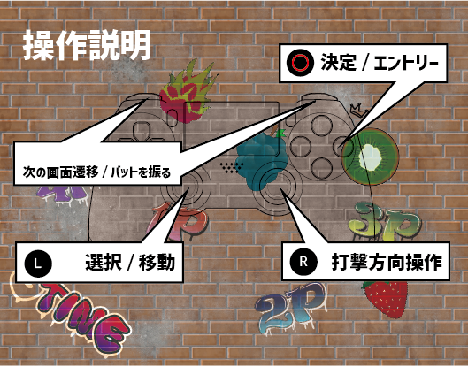
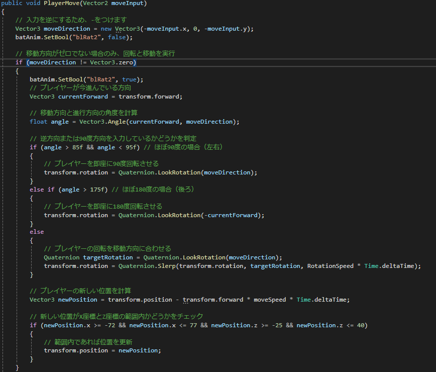
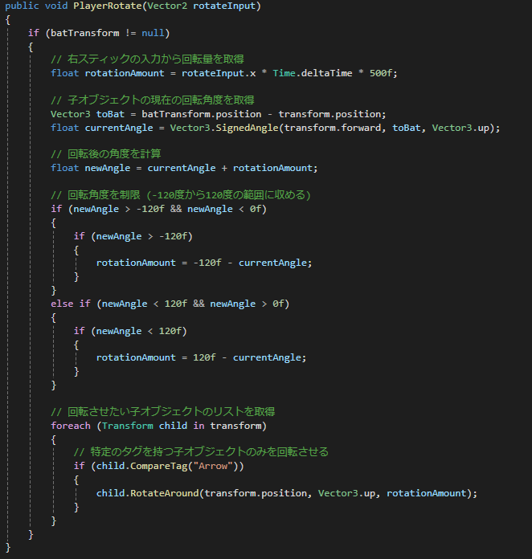

BomuStrike

プロモーション動画
概要
4人のプレイヤーが降ってくる爆弾をバットで打ち返し、相手にぶつけるゲームです。
爆弾をバットで打つとプレイヤーによって爆弾の色が変わります。
プレイヤーと違う色の爆弾の爆発に当たると、同じ色のプレイヤーに得点が入ります。
残り30秒になると、1位以外のプレイヤーのバットが金属バットに切り替わります。
金属バットで爆弾を打つと爆弾が巨大化し、爆弾の判定が広がります。
リザルトでは、スコアが順番に表示されていきます。一位のプレイヤーには王冠がつきます。
操作説明
R2ボタン: バットを振る、画面遷移
Lスティック:選択/移動
Rスティック:打撃方向操作
〇ボタン:決定/エントリー

こだわったスクリプト
このゲームでは、シーン遷移を統括する、
シーンマネージャーを制作しました。
制作する中で、いかに他の日意図がシーンの遷移を楽に
できるかを考えつつこのコードを作りました。

